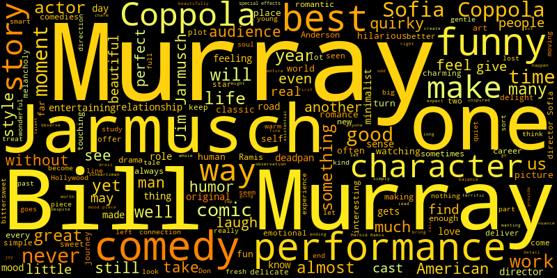

Relative search rank on Google, 100 being area searching for "Bill Murray" the most.
My first atypical chart is a choropleth map, which turned out to be much easier to create than expected. I initially thought I would have to use arcgis, however Google Docs was very intuitive and allowed me to easily graph the data collected from the Google Trends section. This meant that making the graph interactive was effortless, however using google docs has a major noticable drawback: It seems to be impossible to add a title onto the graph itself. One interesting tidbit I found because of making this graph is why Bill Murray is often searched for in South Carolina and Oregon: He has a Food Truck Business in SC, and often visits Portland in Oregon.
Word Cloud of Bill Murray's Top 5 Movies as rated by RottenTomatoes with a starring role.
My initial plan was to scrape review texts of all of Bill Murray's Movies on RottenTomatoes. To do this, I used a python module named tomatopy by sjmiller8182 to gather reviews on RottenTomatoes one movie at a time, then combined them all, finally cleaning the data of loose html tags as well as a few film-related stop words, specifically "film" and "movie".
While attempting to use the imdbpie module I found that the filmography list also included Television Shows as well as Live Appearances, with no way to filter only Films.
They also only included the imdb_ids, meaning that I would have to further use the imdbpie module on each and every one of Bill Murray's movies, soley to get the titles of his films, As the RottenTomatoes scraper required either urls or the movie names.
Because of this, I instead manually found his top 5 starring roles as rated by RottenTomatoes ('Ghostbusters', 'Groundhog Day', 'Lost in Translation', 'Rushmore', 'Broken Flowers'), and used reviews from those movies.
The result showed some notable flaws. As it was frequency based, movies with more reviews had a larger impact on the Word Cloud, for example Jarmusch being one of the most common words even though he directed only one of the selected movies.
My final graph was planned to be a relationship or network graph between all actors that have been in a movie with Bill Murray. I would have had each node be an actor, with its size based on the number of movies they had been with Bill Murray. There would also have been links representing movies that both actors were in, only using Bill Murray movies.
This, however, ended up being incomplete due to imdbpie running notably slowly between each parse of each imdb_id, likely due to webcrawling delay limitations, either by the module or imdb itself.